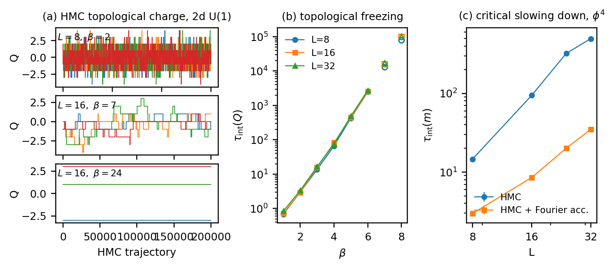
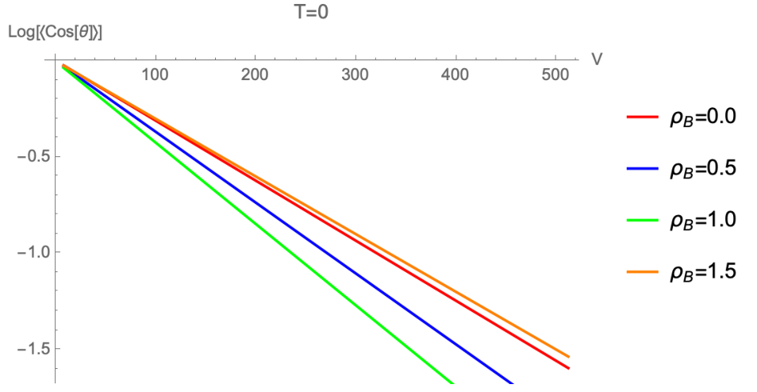
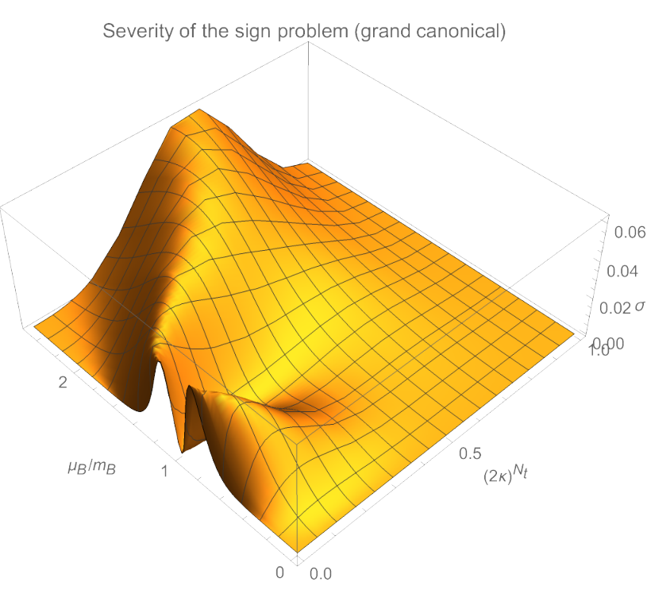
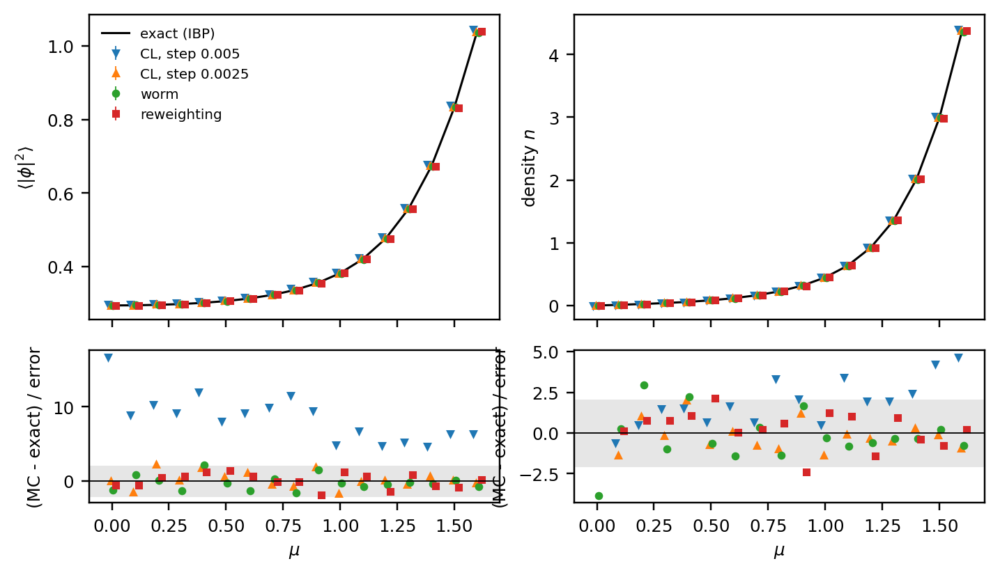
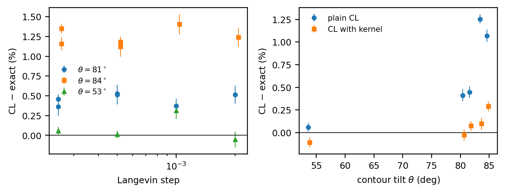
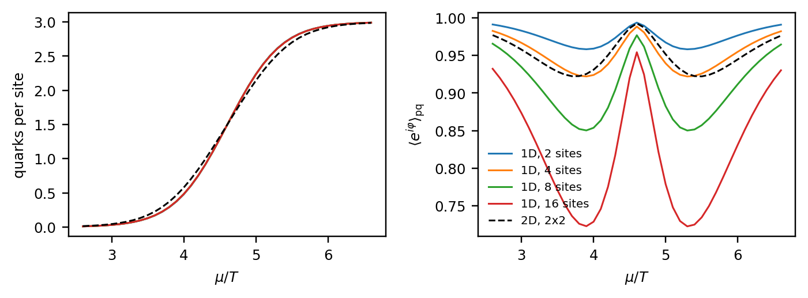
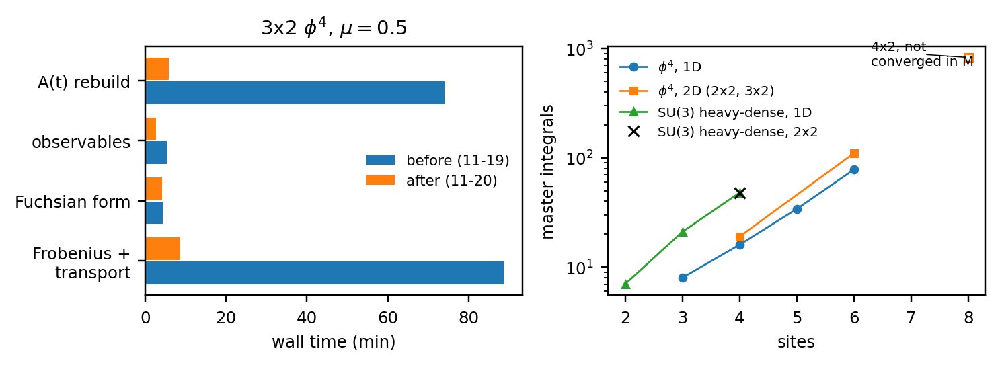

不抽样的格点场论：用分部积分精确计算
格点 Monte Carlo 在三个地方会失灵：临界点附近链走得太慢，规范场的拓扑扇区之间走不过去，复作用量下权重不是概率。 本文讲一条不抽样的路线：用分部积分把格点积分化成有限个主积分，再解它们关于参数的微分方程，在小格子上得到任意精度的精确结果。
0 为什么不能只靠采样
格点场论的期望值写成
$$\langle O\rangle=\frac{1}{Z}\int \mathcal D\phi\;O[\phi]\,e^{-S[\phi]} .$$
Monte Carlo 把 $e^{-S}$ 当成概率，用一条 Markov 链去抽样。这条路在三个地方会出问题：链走得太慢（临界减慢）， 链走不到该去的地方（拓扑冻结），以及 $e^{-S}$ 根本不是概率（符号问题）。下面用我们自己跑的数据把这三件事摆出来。

0.1 临界减慢
衡量"链走得多慢"的量是积分自相关时间 $\tau_{\rm int}$：$N$ 个样本只相当于 $N/(2\tau_{\rm int})$ 个独立样本。 在相变点附近，关联长度 $\xi$ 变大，局部更新要把信息传过 $\xi$ 那么远，构型才能"忘掉"自己，于是 $\tau_{\rm int}\propto\xi^{z}$， 在有限盒子里就是 $\tau_{\rm int}\propto L^{z}$。
我们的 $\phi^4$ HMC（图 c）：$L$ 从 8 到 32，$\tau_{\rm int}$ 从 15 涨到约 500，$z\approx2.4$。Fourier 加速让长波模走得和短波模一样快， 把 $\tau$ 压低了一个数量级，但增长的趋势还在。
对自旋系统，这个问题已经被团簇算法（Wolff）解决了。做法是在同号的相邻自旋之间以一定概率连键，把连起来的一整团一起翻转。 这些团恰好就是物理上关联在一起的区域，大小自动跟着 $\xi$ 长大，所以一步就能在尺度 $\xi$ 上更新，不需要靠局部一点点扩散。 二维 Ising 上，局部算法的 $z\approx2.2$，Wolff 降到约 0.25。$\phi^4$ 也能借用这个办法。可惜规范理论没有同样好用的团簇算法。
0.2 拓扑冻结
规范场有一个只取整数的拓扑荷 $Q$。从一个 $Q$ 换到另一个，构型必须翻过一个随 $\beta$ 增高的作用量势垒；到连续极限，不同的 $Q$ 之间完全隔开。图 (b) 里，$\beta$ 每增加 1，$Q$ 的自相关时间就乘约 6；到 $\beta=24$，16 条链各走 20 万步，$Q$ 一次都没变，每条链都停在起点所在的扇区（图 a 最下面）。
0.3 符号问题
有限密度（化学势 $\mu$）或实时间时，$S$ 是复数，$e^{-S}$ 不再是概率。通常只用它的模去抽样（相位淬火，记作 pq），再把相位乘回去： $$\langle O\rangle=\frac{\langle O\,e^{i\varphi}\rangle_{\rm pq}}{\langle e^{i\varphi}\rangle_{\rm pq}},\qquad \langle e^{i\varphi}\rangle_{\rm pq}=\frac{Z}{Z_{\rm pq}}=e^{-V\Delta f}.$$ 分母随体积 $V$ 指数地变小，所需样本数按 $1/\langle e^{i\varphi}\rangle^2$ 增长。
QCD 在重夸克极限下有一个只含 Polyakov 圈的有效理论（Fromm–Langelage–Lottini–Philipsen 2012），常被用来研究有限密度的符号问题。 下图取自 Bühlmann 与 Wenger 的工作：平均相位的对数随体积线性下降，即指数衰减；衰减速率依赖化学势，在半填充（$\mu_B\approx m_B$）附近出现凹陷， 两侧最严重。


绕开符号问题的另一条路是复 Langevin：把场复化，让随机过程在复平面上走。它不需要正的权重，但不保证收敛到对的答案（5.1 节有一个例子）。
0.4 本文的回答
后面的方法不抽样，所以没有自相关时间，复权重也不会让它变难。它付出的代价是另一种指数增长：独立积分（主积分）的个数随格点数指数增长， 所以只适合小格子。它能做的，是在这些采样失效的地方给出精确值，用来检验采样方法。
1 物理问题：有限密度的 Bose 气体
最简单、但已经有符号问题的模型，是带化学势的相对论 Bose 气体，即复标量场 $\phi^4$。格点上的作用量是 $$S=\sum_x\Big[\eta\,|\phi_x|^2+\lambda|\phi_x|^4\Big]-\sum_{x,\nu}\Big(e^{\mu\delta_{\nu0}}\,\phi_x^*\phi_{x+\hat\nu}+e^{-\mu\delta_{\nu0}}\,\phi_{x+\hat\nu}^*\phi_x\Big), \qquad \eta=2d+m^2 ,$$ $d$ 是维数，$\hat0$ 是时间方向。化学势 $\mu$ 只出现在时间方向的跳跃项上，向前乘 $e^{\mu}$、向后乘 $e^{-\mu}$。$\mu\neq0$ 时这两项不再互为复共轭，$S$ 变成复数。 下文取 $m^2=\lambda=1$。要算的是场的涨落和粒子数密度 $$\langle|\phi|^2\rangle,\qquad n=\frac{1}{V}\frac{\partial\ln Z}{\partial\mu}=\frac1V\Big\langle\sum_x\big(e^{\mu}\phi_x^*\phi_{x+\hat0}-e^{-\mu}\phi_{x+\hat0}^*\phi_x\big)\Big\rangle .$$
这个模型在大体积上已经有别的解法：把场改写成整数"流"变量后权重变正，可以用 worm 算法；复 Langevin 在这里也能用。我们选它，正是因为有这些方法可以对照。 之后同一套方法推广到实时间、费米子、U(1) 规范场和 SU(3) 的重夸克有效理论。
2 方法 I：分部积分把无穷多个积分变成有限个
2.1 单个格点
只有一个格点、没有跳跃时，$\phi$ 的辐角可以直接积掉，剩下 $r=|\phi|^2$ 上的一维积分。定义一族积分 $$I_a=\int_0^\infty dr\; r^a\,e^{-\eta r-\lambda r^2},\qquad a=0,1,2,\dots$$ 全导数的积分为零： $$0=\int_0^\infty dr\,\frac{d}{dr}\Big(r^{a+1}e^{-\eta r-\lambda r^2}\Big)\;\Longrightarrow\;(a+1)\,I_a=\eta\,I_{a+1}+2\lambda\,I_{a+2}.$$ 这一条关系把 $I_2, I_3,\dots$ 全部写成 $I_0$ 和 $I_1$ 的组合。无穷多个积分里只有两个是独立的，叫主积分。它们对参数满足封闭的微分方程， 例如对 $\eta$ 求导等于在被积函数里乘 $-r$，再用上面的关系消掉 $I_2$： $$\frac{d}{d\eta}\begin{pmatrix}I_0\\ I_1\end{pmatrix}=\begin{pmatrix}0&-1\\[2pt] -\frac{1}{2\lambda}&\frac{\eta}{2\lambda}\end{pmatrix}\begin{pmatrix}I_0\\ I_1\end{pmatrix}.$$
整个方法就是这两件事在格点上的推广：用分部积分找出主积分，再对一个参数解微分方程。
2.2 格点上
把每个格点的 $\phi_x,\phi_x^*$ 当作独立的复变量 $z_x,w_x$，积分族是所有单项式的积分 $\langle m\rangle\equiv\int m(z,w)\,e^{-S}$（未归一化，$\langle1\rangle=Z$）。 对每个变量、每个单项式都有一条关系 $$\int\frac{\partial}{\partial z_k}\Big(m\,e^{-S}\Big)=0\;\Longrightarrow\;\big\langle\partial_k m\big\rangle=\big\langle m\,\partial_k S\big\rangle .$$ 实际只能生成有限多条关系：取总次数不超过 $M$ 的单项式，这个范围叫盒子。把单项式按次数排序，从次数最高的开始做高斯消元（Laporta 算法）， 消不掉、且离盒子边界足够远的就是主积分。加大 $M$ 时主积分不变，说明盒子够大了。
对称性让很多积分相等：平移、反射使不同位置的同型单项式相等，U(1) 荷守恒（$z\to e^{i\alpha}z,\ w\to e^{-i\alpha}w$）使 $z$ 和 $w$ 次数不同的单项式积分为零。 所以只需保留每个对称类的一个代表，下面的"主积分数"都指对称类代表的个数：
| 一维格点数 $N_t$ | 1 | 2 | 3 | 4 | 5 | 6 |
|---|---|---|---|---|---|---|
| 主积分（对称类代表） | 2 | 4 | 8 | 16 | 34 | 78 |
这个数有几何含义。不扣格子对称性时，主积分数等于复化作用量的临界点（鞍点 $\partial S=0$）个数（Lee–Pomeransky，扭曲上同调）。 U(1) 荷使每个非平凡鞍点连成一个圆（一条轨道），所以计数是"原点 1 个，加上鞍点轨道数"。我们用 Gröbner 基独立数鞍点，$N_t=2,3,4,5$ 得到 $1+4$、$1+15$、$1+48$、$1+165$， 和不扣格子对称性的主积分数 5、16、49、166 完全相同。这些鞍点就是 Lefschetz 顶针方法里的鞍点：积分可以分解成各鞍点出发的围道积分之和， 符号问题就是这些贡献带着相位互相抵消。主积分的个数就是要追踪的独立贡献的个数，它不依赖这些贡献抵消得多厉害。
3 方法 II：对跳跃参数的微分方程
3.1 方程从哪来
在跳跃项前加一个参数 $t$，$S=S_0-t\,H$，$S_0$ 是各格点自己的部分，$H$ 是跳跃项，物理点是 $t=1$。对 $t$ 求导只是在被积函数里多乘一个 $H$： $$\frac{d}{dt}\langle m\rangle_t=\langle H\,m\rangle_t .$$ $Hm$ 是另一些单项式，用 IBP 约化回主积分，就得到线性方程组 $$\frac{d}{dt}\,\vec I(t)=A(t)\,\vec I(t).$$ $A(t)$ 的元素是 $t$ 的有理函数。在我们算过的所有情形里分母都只有 $t$ 的幂，所以方程唯一的有限奇点在 $t=0$。
3.2 两个格点的完整例子
两格点的环取 $\mu=0$。两格点时前后两条链连接同一对格点，$\mu$ 只以 $2\cosh\mu$ 出现，没有符号问题，这里只用来展示方法。4 个主积分取为 $\vec I=\big(\langle z_0z_1w_0w_1\rangle,\ \langle z_0w_0\rangle,\ \langle z_0w_1\rangle,\ \langle 1\rangle\big)$，程序算出的精确矩阵是 $$\frac{d}{dt}\vec I=\begin{pmatrix}0&-12t&4t^2+9&2t\\ 0&4t&-6&0\\ 4&0&-1/t&0\\ 0&0&4&0\end{pmatrix}\vec I .$$ 最后一行是 $dZ/dt=4\langle z_0w_1\rangle$：配分函数对跳跃强度的导数就是跳跃项的期望，两条链各有两个方向，共 4 项，由对称性都等于 $\langle z_0w_1\rangle$。 第三行的 $-1/t$ 是奇点的来源：$\langle z_0w_1\rangle$ 要粒子跳一步才不为零，在 $t=0$ 处正比于 $t$。
$t=0$ 处的初值是单格点积分的乘积：$\langle1\rangle=I_0^2$，$\langle z_0w_0\rangle=I_0I_1$，$\langle z_0z_1w_0w_1\rangle=I_1^2$，$\langle z_0w_1\rangle=0$。 更一般地，主积分在 $t=0$ 的 Taylor 系数 $\langle H^km\rangle_0/k!$ 就是跳跃展开的系数，所以解这个方程相当于把跳跃展开精确地求和到所有阶。
3.3 $t=0$ 的奇点怎么处理
把矩阵写成 $A(t)=A_0/t+A_1+A_2t+\cdots$。只有一阶极点的方程叫 Fuchs 形式，它的解可以写成级数 $\vec I=\sum_k \vec c_k\,t^k$，系数满足递推 $$(k-A_0)\,\vec c_k=\sum_{i\ge1}A_i\,\vec c_{k-i}.$$ 只要 $k$ 不是 $A_0$ 的本征值，$\vec c_k$ 就由前面的系数唯一确定。$k$ 等于 $A_0$ 的某个非负整数本征值时叫共振，这些阶的系数从跳跃展开直接取。 两格点例子里 $A_0$ 只有一个非零元 $-1$，本征值是 $0,0,0,-1$，只有 $k=0$ 共振，需要的就是上面的初值，之后每一阶都由递推得到。
格点多了以后，$A(t)$ 在 $t=0$ 会出现二阶或更高的极点。原因是 $t=0$ 处独立积分变少：三格点不扣对称性时，$t\neq0$ 有 16 个主积分，$t=0$ 只剩单格点组合的 $2^3=8$ 个， 为 $t\neq0$ 选的基在 $t=0$ 退化了。这时用 Lee 的平衡变换（Feynman 积分中的标准做法）：换一组依赖 $t$ 的基 $\vec J=T(t)\vec I$，每一步把一部分基乘以或除以 $t$， 直到方程变成 Fuchs 形式，再照上面的递推做。
3.4 为什么还要分步走到 $t=1$
既然 $t=0$ 是唯一的有限奇点，级数在 $t=1$ 本来就收敛。问题出在数值上。方程有 $n$ 个独立解，物理的那个增长最慢，其余的增长极快； 级数在 $t=1$ 处的各项先变得极大再相互抵消，任何舍入误差都会激发快增长的解，被放大到 $10^{100}$ 倍的量级。所以只在 $t=0$ 附近用级数（到 $t=1/16$）， 然后用高阶 Taylor 展开一小步一小步走到 $t=1$，全程用几百位精度。检查有两种，一种是两档精度给出相同结果，另一种是级数系数必须等于独立算出的跳跃展开系数。 只靠前一种不够，因为初值错了时两档精度照样一致，快增长的解把误差"吞掉"了。
3.5 精确的 $A(t)$ 怎么得到
在有理数上消元，中间结果的位数会爆炸，$\mu=0.5$ 时 $A(t)$ 的系数就有上百位。所以消元在大素数 $p$ 的有限域上做，在若干个 $t$ 值和若干个素数上重复， 再用插值恢复 $t$ 的依赖，用中国剩余定理和有理数重建恢复系数。这一部分是从 Feynman 积分程序借来的成熟技术；再借用其中的方程筛选、Newton 插值和自适应步长， $3\times2$ 格子从约 9.5 小时降到约 21 分钟（图 6.1 左）。
4 Bose 气体的结果
三格点、$\mu=\ln(61/37)\approx0.5$：作用量是复数，8 个主积分，$A(t)$ 在 $t=0$ 有二阶极点，一次平衡变换化成 Fuchs 形式。 结果 $\langle|\phi|^2\rangle=0.30628715611762152364665\ldots$，$n=0.08364122223565378481344\ldots$，与转移矩阵一致到 $10^{-91}$。 二维 $3\times2$、$\mu=0.5$ 有 110 个主积分（$\mu=0$ 时也是 110），$\langle|\phi|^2\rangle=0.23484485152447177987\ldots$，$n=0.05641185012763665496\ldots$。

图 4.1 用 17 个化学势检验采样方法。复 Langevin 步长 0.005 时 $\langle|\phi|^2\rangle$ 系统地偏高 5 到 17 个标准差，步长减半后回到误差范围内， 说明那是步长的离散化误差；没有精确值，很难把这种误差和方法本身的失败区分开。这些格子的时间方向很短，温度很高，所以密度随 $\mu$ 平滑上升。 零温时 $\mu$ 低于粒子质量、密度严格为零的台阶（Silver Blaze），要更长的时间方向才看得到。
5 其他问题上的结果
5.1 实时间：复 Langevin 收敛到错误的答案
实时间演化的权重是 $e^{iS_M}$，纯振荡。Schwinger–Keldysh 做法把时间放在复平面的围道上：先沿实时间向前、再向后，最后沿虚时间（温度）闭合。 我们把实时间段倾斜一个角度 $\theta$，链上的时间步长是 $\Delta t\,e^{\pm i\theta}$。$\theta=0$ 是普通的虚时间，$\theta\to90^\circ$ 是真正的实时间，权重越来越振荡。 模型是 0+1 维的 O(2) 振子加四次势，三个格点，观测量是等时关联 $\langle\Phi_0\Phi_0^*\rangle$。IBP 对 $\theta$ 一视同仁，倾角只改变方程的系数； 在所有角度上它都和另外两条独立的精确路线一致到 $10^{-11}$ 以上。

$\theta\ge81^\circ$ 时普通复 Langevin 偏高 0.5%（81°）到 1.2%（84°），步长缩小 8 倍也不变，而它自己的收敛诊断看不出异常。它收敛了，只是收敛到错误的分布。 加一个自由场核能修好 81°，在 84° 仍残留约 0.3%。
5.2 费米子
在有限格子上把费米子积掉，得到的行列式是玻色场的多项式，它只是被积函数里的一个分子，落在原来的主积分上，不增加主积分数。 例子是一维复 $\phi^4$ 加一个 staggered 费米子，质量 $m_t=m_F+g|\phi_t|^2$，费米子化学势 $\mu_F$。行列式是 $$\det D=A(m_0,\dots,m_{N-1})+2^{1-N}\cosh(N\mu_F),\qquad A={\rm tr}\prod_t\begin{pmatrix}m_t&1/4\\1&0\end{pmatrix},$$ $\mu_F$ 只出现在第二项，对应费米子世界线绕时间一圈。所以只要算出 $\langle A\rangle$ 和 $\langle\partial A/\partial m_F\rangle$ 两个数，所有 $\mu_F$ 下的结果都解析给出。 六格点时这两个数和独立的转移矩阵一致到 $10^{-90}$，费米子密度随 $\mu_F$ 从 0 升到 0.995。
5.3 U(1) 规范场
二维紧致 U(1) 规范理论的作用量是 $S=-\beta\sum_p\cos\Theta_p$，$\Theta_p$ 是 plaquette 四条链的相位之和。变量是链上的相位，IBP 关系来自对相位求导， 积分族是链变量 $e^{i\theta}$ 的 Laurent 单项式。$L=2$ 有 8 个主积分；$L=3$ 有 630 个，正好等于孤立鞍点的个数。物理的配分函数用不到全部，$L=2$ 时 $$Z=\sum_n I_n(\beta)^4={}_2F_3\big(\tfrac12,\tfrac12;1,1,1;4\beta^2\big),$$ 满足一个 4 阶方程 $\beta^3Z^{(4)}+6\beta^2Z^{(3)}+(7\beta-16\beta^3)Z^{(2)}+(1-48\beta^2)Z^{(1)}-16\beta Z=0$。4 正好是 8 个鞍点在格子对称和电荷共轭下的轨道数。 $L=3$ 时 $Z$ 的最小方程是 15 阶，同样等于 630 个鞍点的轨道数；用这个方程，$\langle{\rm plaquette}\rangle$ 在 $\beta=1$ 算到 71 位。
拓扑荷 $Q$ 是相位的非多项式函数，不在这个积分族里，所以 IBP 不直接给 $\langle Q^2\rangle$（第 0 章的精确 $\langle Q^2\rangle$ 来自 Bessel 函数的特征标求和）。 但 IBP 给出的 $Z$、plaquette 和 Wilson 圈是对整个链空间积分得到的，本来就包含所有拓扑扇区，不受冻结影响；第 0 章里冻结 HMC 造成的 Wilson 圈偏差，正需要这样的精确值来量出。 带费米子的 Schwinger 模型在 $L=2$ 时，行列式的 49 个单项式也落到同样的 8 个主积分上。
5.4 SU(3)：重夸克 QCD 有效理论
夸克很重时，有限温度的 QCD 可以化成只含 Polyakov 圈的有效理论。每个空间格点 $x$ 上有一个 SU(3) 矩阵 $P_x$（沿时间方向的规范链之积），记 $L_x={\rm tr}P_x$， 配分函数是 $$Z=\int\prod_x dP_x\ \prod_x\det(1+he^{\mu/T}P_x)\det(1+he^{-\mu/T}P_x^\dagger)\ \prod_{\langle xy\rangle}e^{\lambda(L_xL_y^*+L_x^*L_y)},$$ $dP$ 是 Haar 测度，$h$ 随夸克质量增大而变小，$\lambda$ 是近邻耦合。这里的"格点"是空间格点，$V$ 个点的环对应 1+1 维，$2\times2$ 对应 2+1 维。 SU(3) 的 $\det(1+hP)=1+hL+h^2L^*+h^3$，所以被积函数只依赖 $L$ 和 $L^*$。
积分族取 $\int\prod_x L_x^{a_x}L_x^{*\,b_x}\,e^{\lambda S}$，Haar 测度直接含在里面。关系来自 SU(3) 上的左不变导数 $X_a$（$X_aU=iT_aU$）， $\int dU\sum_a X_a\big({\rm tr}(T_aU^k)\,g\big)=0$，$k=1,2$，也就是格点上的 Schwinger–Dyson（圈）方程。用 ${\rm tr}\,U^2=L^2-2L^*$ 这类恒等式，它们全部写成 $L,L^*$ 的多项式关系。 只用 Casimir 算子生成的关系不完整（主积分数随盒子一直涨），一阶的圈方程才完整。主积分数在 2、3、4 个格点的环上分别是 7、21、48，$2\times2$ 也是 48。

图 5.2 展示了这个模型的物理。$\mu$ 只通过绕时间一圈的世界线进入；单个夸克带色荷，被 Haar 积分消掉，只有三个夸克组成的色单态（重子）留下 $\mu$ 的依赖。 密度从 0 平滑升到每格点 3 个夸克。平均相位在半填充（$he^{\mu/T}=1$）处回到接近 1，因为那里 $\det(1+P)=2+2\,{\rm Re}L$ 是实数（粒子–空穴对称）； 两侧最低，格点越多越低。这和三维格子上的文献结果（图 0.2）是同一个图像。
6 边界在哪里，为什么

主积分数不看化学势，但随格点数指数增长（图 6.1 右）：一维 $\phi^4$ 每多一个格点约乘 2.2，重夸克有效理论约乘 2 到 3。采样方法付的代价是 $e^{V\Delta f}$，$\Delta f$ 由物理决定； 这里付的是 $c^V$，$c$ 由每个格点上的局部结构决定。另一个限制是盒子：观测量（例如费米子行列式）次数越高，盒子要越大，消元矩阵的列数随之爆炸。
按这两点估计，$\phi^4$ 的 $4\times2$ 约有 800 个主积分，一次消元要几个小时；重夸克有效理论的三维 $2^3$ 需要约 $3\times10^7$ 列的消元，要 1 TB 量级的内存，属于花资源能做的范围。 三维纯规范 SU(3) 则做不了：每条链 8 个自由度，而且规范理论的鞍点不孤立（环面上的平坦联络连成连续的一族），"主积分 = 孤立鞍点"的图像不再成立。
7 和已有方法的关系
绕开符号问题大致有三类思路。第一类换变量让权重变正，如对偶（流）表示加 worm 算法（Gattringer 等）、正则系综（Bühlmann–Wenger），它们能做大体积，但每个模型要找自己的对偶。 第二类换围道让相位不振荡，如复 Langevin、Lefschetz 顶针、路径优化，它们需要精确结果来判断是否收敛到了对的答案。第三类不抽样，如转移矩阵、张量网络、圈方程自举（Kazakov–Zheng 等）和本文； 前两者受截断控制，自举给出上下界。本文的方法在小格子上精确，同一套代数用于有限密度、实时间和复参数。它的思想来自 Feynman 积分（Laporta、Lee、Kira、FiniteFlow、AMFlow、DiffExp） 和 Weinzierl 等人的格点 IBP。
8 下一步
三维 $2^3$ 的重夸克有效理论是离真实 QCD 有限密度最近的精确结果。复参数是采样最弱的地方，例如复耦合下 $Z$ 的零点（Fisher 零点），在这个框架里是一个整函数的零点。 三维纯规范应该走圈方程自举，而不是精确求解。
附录 A 怎么知道算对了
每个结论至少有一条完全独立的路线核对：
| 问题 | 独立路线 | 一致到 |
|---|---|---|
| 复 $\phi^4$，一维 | 对偶表示的转移矩阵 | $10^{-73}$–$10^{-91}$ |
| 复 $\phi^4$，$3\times2$ | 二维转移矩阵（精度受其网格限制）；worm Monte Carlo | 约 6 位；统计误差内 |
| $\phi^4$ + 费米子 | 带费米子块的转移矩阵 | $10^{-90}$ |
| 0+1 维 SU(3) QCD | 解析常数项 vs 数值积分 | $10^{-16}$ |
| 重夸克有效理论 | 两种独立 IBP 写法；转移矩阵；小耦合级数 | 40 位；$10^{-16}$ |